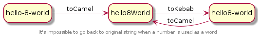

Known issues
Number is not a word
When using case-converter you cannot use a number as separator.
In practice this means a number is always identified as a lower case letter.

As shown in the previous example, there is no way to go back to the original input string (i.e. hello-8-world), in _
kebab case_ this sting is written as
hello8-world.
Other examples (with automatic case detection):
(new Convert('REEL2REAL'))->toDot(); // r.e.e.l2.r.e.a.l
(new Convert('reel2real'))->toDot(); // reel2real
(new Convert('Reel2Real'))->toDot(); // reel2.real
I strongly suggest to avoid numbers in strings to be converted.
Mixed conventions
It might be evident, but Case Converter cannot handle string with mixed naming conventions.
For example the string XMLHttpRequest will result in x.m.l.http.request when using dot notation:
$xhr = new Convert('XMLHttpRequest');
$xhr->toDot() // x.m.l.http.request
The correct way to name this string (for Case Converter) should have been XmlHttpRequest.
Another example of mixed conventions:
| ❌ Wrong | ✅ Good |
|---|---|
| PHP_CodeSniffer | php_code_sniffer |
| PHP_CodeSniffer | PhpCodeSniffer |
| PHPUnit | PhpUnit |
| PHPUnit | php-unit |